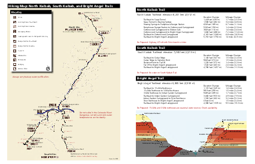

Pc
Mr
Ct
Pc
Mr
Ct
I’ve written this to be the article that I wish I myself could have read before my first hike up the Grand Canyon’s North Kaibab Trail.
Typical descriptions of the North Kaibab Trail are quick to mention its fatal summer temperatures, its high altitude trailhead on the North Rim, and its 5,761 foot elevation gain that requires hikers to climb more than a vertical mile from the Colorado River.
But the trail presents yet another challenge that, alas, is too rarely mentioned:
Its devastating geology.
The hiker who starts up the North Kaibab Trail possessed of only a simple South Rim day-hike geology will soon find themselves adrift and disoriented, lost in a wide wilderness of unfamiliar rock — when they had instead imagined themselves making a steady climb through the Canyon’s familiar cliffs and benches.
This article, therefore, is written for a “Bright Angel Hiker” (whom we are going to be too kind to name) who has become familiar with the Grand Canyon’s most famous strata through day hikes from the South Rim, and who now fancies himself ready for the North Kaibab Trail. He knows that a rim-to-rim day hike carries risks at the beginning of June, but two nephews are determined to make the attempt and it’s agreed that someone familiar with the Canyon should accompany them.
The Bright Angel Hiker will already be familiar with the Canyon’s two most famous strata: the high white Coconino cliffs whose sheer and dizzy precipice dominates the view from so many South Rim overlooks, and the mighty Redwall whose height can be difficult to gauge from the rim but whose cliffs stand at least a hundred feet taller.
When a hiker looks back south from Plateau Point — the most remote inner-canyon overlook to which the National Park brochure dares to countenance a day hike — the Coconino Sandstone (Pc) and Redwall Limestone (Mr) are the most prominent features of the South Rim’s towering ramparts:
Pc
Mr
Ct
The view back toward the South Rim from Plateau Point.
But what rock is the hiker himself standing on at Plateau Point?
Plateau Point stands atop the Canyon’s deepest layer of horizontal rock: the Tapeats Sandstone (Ct). Like the Coconino and Redwall, the Tapeats are a cliff-forming layer, as the hiker can see by turning east to look across Pipe Creek. There, a fine section of Tapeats cliffs caps the far wall of Pipe Creek canyon:
 Pc
Mr
Mr
Ct
Ct
Xbr
Pc
Mr
Mr
Ct
Ct
Xbr
The view east from Plateau Point across Pipe Creek.
In the distance at the photo’s left, you can see a similar line of Tapeats Sandstone (Ct) cliffs arrayed along the top of Upper Granite Gorge through which the Colorado River itself runs.
There are no further horizontal layers below the Tapeats, only a twisting chaos of ancient metamorphic rock. In the photo above you can see a steep slope of Brahma Schist (Xbr) falling away toward Pipe Creek, but the Brahma is only one of several granite, schist, and gneiss formations that together form the thousand-foot walls of both Upper Granite Gorge and its side canyons like Pipe Creek.
These are the Grand Canyon’s “basement rocks” and they are so much older than the Tapeats that geologists have given the name “the Great Unconformity” to the contact between them.
Thus the Bright Angel Hiker returns from Plateau Point to the South Rim with a tidy Grand Canyon diagram in his head: a colorful layer cake of horizontal strata standing atop a massed chaos of older rock. The Canyon’s structure almost seems to have been inspired by cinema, where bright heights of order and rationality are always underlain by dark hidden depths of primæval chaos.
This emotional contrast is only heightened by the National Park brochures, which always confine day hikers to the horizontal strata. Only there will they promise the hiker some hope of safety. But they make clear that heat, dehydration, exhaustion, and even death itself stand ready to stalk the day hiker who would dare pass beneath the Tapeats and descend into the twisted maelstrom of Precambrian rocks beneath.

Here’s the 2-page
trail map
(PDF) the hikers followed back in 2014.
The Park Service has switched to a
longer
brochure (PDF)
with ample warnings about the hike
and also a more informative map.
The Bright Angel Hiker therefore envisions a rim-to-rim hike with the nephews in schematic terms. First, a quick descent of the South Kaibab Trail with all the familiar strata serving as mileposts. Then a plunge into the Precambrian depths that will take them across the Colorado River. Finally, like a diver rising back to the surface, the North Kaibab Trail will carry them back up into the Tapeats and their feet will once again stand on familiar rock. From there the trail will wind past the Redwall and then the Coconino, whose cliffs will stand sentinel and measure the hikers’ progress as they climb — weary but triumphant — to the North Rim.
And so the hiker and the nephews start down the South Kaibab Trail before dawn. It’s June 7, 2014. The morning is cool, the hike is downhill, and they make excellent time.
To its credit, the Grand Canyon doesn’t wait until it has lured the Bright Angel Hiker several dangerous miles north of the Colorado River before proclaiming that it intends a more complex geology than the hiker is prepared for. In fact, it’s while the hiker is still south of the River that the Canyon unveils a surprising new stratum, just as the hikers have finished their descent through the Tapeats:
 Ct
Ct
Xbr
Xgr
Yh
Ct
Ct
Xbr
Xgr
Yh
The startling Hakatai Shale (Yh) on the South Kaibab Trail at Panorama Point.
In the distance, across the Colorado River, the geology is conventional and familiar: a picket of Tapeats Sandstone (Ct) cliffs caps Brahma Schist (Xbr) and Granite (Xgr) basement rocks, just as the Bright Angel Trail has taught the hiker to expect. But what’s going on here, over on this side of the river? The South Kaibab Trail approaches Panorama Point and its lonely slab of Tapeats Sandstone (Ct) across a surprising shallow slope of loose orange stone.
If only the hiker stopped to notice! But he and the two nephews are at full tilt downhill, pushing to make several more miles while the morning is still cool.
They do, at least, notice the change in the trail. The awkward muddy mule-sized stairsteps on which the South Kaibab descends the Tapeats suddenly give way to this long gentle slope. But it doesn’t occur to them to ponder the unfamiliar orange stone which provides them with such a gentle grade.
Shouldn’t the Tapeats have been followed by basement rock instead?
Since they missed it the first time, the Canyon offers a second outcrop of the same anomalous orange stone. The hikers cross the Colorado River at the bridge, refill with water at Bright Angel Campground, and start hiking up the North Kaibab Trail along Bright Angel Creek. Once they pass the cluster of famous stone cabins that make up Phantom Ranch and climb into the empty valley above it, the orange stone reappears high in the cliffs on their left:
 Ct
Yh
Xr
Xr
Ct
Yh
Xr
Xr
The view west across Bright Angel Creek ½ mile north of Phantom Ranch, where an outcrop of Hakatai Shale (Yh) stands high in the cliffs.
It might take a moment for your eyes to calibrate the scale of this image. The Tapeats Sandstone (Ct) cliffs atop the canyon wall stand more than a thousand feet above Bright Angel Creek at the bottom — you are looking at nearly a vertical quarter mile of rock. The creek, though it’s a full twenty feet wide, is barely visible as a slender brown-green ribbon running along the base of the cliffs. The North Kaibab Trail alongside it is invisible, though you might spot the Clear Creek Trail curving toward the photographer across the near side of the valley floor.
It’s nearly 9am as the hiker and nephews reach this section of the North Kaibab Trail. With their attention on the trail in front of them and their eyes shaded by hat brims, they never even see the rusty orange outcrop high in the cliffs above. They see only the rock that’s level with the trail: rugged slopes of Rama Schist (Xr), a basement rock of exactly the sort that the Bright Angel Hiker expects. At this point, his mental Grand Canyon schematic remains unchallenged.
It’s our astounding good fortune that George H. Billingsley has chosen to lavish this part of the Canyon with so much attention on his magisterial Geologic Map of the Grand Canyon 30′×60′ Quadrangle, Coconino and Mohave Counties, Northwestern Arizona, available from the USGS as a free PDF or a printed map. Billingsley singles out Bright Angel Canyon for special treatment: of the four cross sections that supplement his map, C–C′ runs directly athwart Bright Angel Creek and D–D′ runs alongside the creek for more than eight miles — all the way from the Colorado River to the Manzanita Rest Area.
For this article I’ve divided Billingsley’s cross section D–D′ into three diagrams, simplified its notations, and added a trace showing the elevation of the North Kaibab Trail as it climbs the Canyon’s layers.
Here are the first three miles of Billingsley’s cross section:

You’ll notice that geologists prefix each strata’s abbreviation with a letter for the age it belongs to, like X for the ancient basement rocks, Y for more recent Precambrian rocks, and C with a little dash through it for the Cambrian period. (If you’re interested, here’s a complete list from the Federal Geographic Data Committee.)
A few notes about the these diagrams:
Billingsley’s cross section exaggerates the vertical dimension by a factor of two, so strata look taller and the contacts between them look steeper than in real life.
The rugged diagonal line shows the elevation of the North Kaibab Trail. The strata that are faintly visible below the line are hidden underground beneath the trail. The strata standing bright above the line should be visible in the cliffs beside the trail.
I’ve added mileposts along the North Kaibab Trail. These measure trail miles, not miles as the crow flies, so the mileposts bunch closer together in the first diagram where the trail does a lot of winding. Note that Mile 0.0 isn’t at the Colorado River but at Bright Angel Campground, to match the National Park Service’s mileages.
Billingsley’s cross section D–D′ doesn’t run along the North Kaibab Trail itself but parallel to the trail a few thousand feet to the west. Strictly speaking, these diagrams don’t show how the strata are exposed on the cliffs along the trail, but how they’re arranged deep inside the hill on the (northbound) hiker’s left. This causes a few small differences, but none that will concern us here. (South of the river, for example, the cross section misses the exciting Hakatai Shale (Yh) at Panorama Point and instead intersects the normal Brahma Schist (Xbr) basement rock to its west.)
So, now that we’ve brought Billingsley alongside as our geologist, what do we learn about this mysterious orange stone?
First, its name: the Hakatai Shale (Yh).
Second, the diagram reveals why we’re seeing isolated outcrops of Hakatai instead of the kind of long continuous layer for which the Grand Canyon is famous: extensive faulting between the Colorado River and Phantom Creek has shattered the once-continuous strata into separate blocks. Each thick vertical line in the diagram is a fault, some of which have pulled quite different rocks right next to each other.
Finally, we learn that even though the Hakatai is the only new layer we’ve noticed in the photographs, it’s not alone. It’s accompanied by two other layers that, when they’re present, always occur in the same order: the Bass Formation (Yb) on bottom, Hakatai Shale (Yh) in the middle, and Shinumo Quartzite (Ys) on top.
It turns out that these layers all belong to the “Grand Canyon Supergroup” — the only geologic ensemble named after the Grand Canyon itself.
The Bright Angel Hiker never expected to meet the Supergroup. After all, many of the National Park’s geology illustrations put the Supergroup entirely underground. This naturally leads the reader to suppose that while these deeply buried layers might be of concern to a miner sinking a shaft, or to an engineer digging a well, they can be safely ignored by anyone walking about aboveground.
Not only have we already seen that this impression is mistaken, but it’s going to become more mistaken as the day proceeds.
After passing Phantom Ranch, the North Kaibab Trail leads the hikers into “The Box” — the deep and narrow chasm that Bright Angel Creek has carved for itself through the basement rock. The sky is narrower here. The creek meanders so sharply over these 3½ miles that at a few spots the hikers are actually walking back south. It’s often impossible to see even a tenth of a mile ahead. This confined space has a reputation for deadly summer temperatures — but early on this June morning, the hikers are enjoying the shade from the Box’s high walls.
Then, right around Mile 4.0, the Box comes to an end.
The hikers step out into full sunshine and find themselves looking up a wide sundrenched valley that slopes up out of sight ahead of them. The Bright Angel Hiker is bewildered. What’s a broad river valley doing here in the middle of the Grand Canyon?
The valley’s dimensions are difficult to gauge from where the hikers stand at its lower end, but the valley is more than a third of a mile wide and stretches uphill for a full three miles before starting to narrow again past Cottonwood Campground. Bright Angel Creek flows down its center towards them, nourishing a slender ribbon of green foliage. But the rest of the valley is a shimmering desert of shrub and stone.
 South Rim
↓ Colorado River
↓ The Box
↓ Mile 4.0
↓ Ribbon Falls
↓ Cottonwood CG
South Rim
↓ Colorado River
↓ The Box
↓ Mile 4.0
↓ Ribbon Falls
↓ Cottonwood CG
The wide valley of Bright Angel Creek between Mile 4.0 and Cottonwood Campground, viewed looking back south from the North Rim.
The Grand Canyon’s usual rule is that once a creek has cut all the way through the Tapeats, it hits implacable granites and schists that force it to carve a sinuous narrows — like the Box. Like Pipe Creek at the bottom of the Bright Angel Trail. Like any number of other creeks along Upper Granite Gorge, even though the Bright Angel Hiker hasn’t met them yet: Clear Creek, Grapevine, Hance.
But here, Bright Angel Creek has plainly breached the Tapeats — they’re in plain view as a row of high cliffs high atop each side of the valley — yet it hasn’t had to carve a narrows. Instead, the creek has been able to furnish itself with a wide spacious valley and with a streambed that runs nearly straight along its eponymous fault.
Why is the Canyon’s substructure so weak here? How has the creek been able to hold its course?
Billingsley’s cross section reveals the answer: the bottom of this valley isn’t basement rock at all! It’s the same series of Supergroup strata that could be glimpsed above the Colorado River, from the Bass Formation (Yb) through the Hakatai Shale (Yh) to the Shinumo Quartzite (Ys). Down by the river, they stood only as faulted blocks or isolated outcrops. But here they’ve returned as a deep stack of long continuous strata.
Reading the cross section from left to right, we see that even as the hikers were at Mile 3.0 winding north through the Box’s Granite (Xgr), the Supergroup started to reappear in the cliffs above them. For more than a mile its strata have been slowly descending toward the trail. And here, just past Mile 4.0, the Bass Formation (Yb) has finally reached the valley floor.
On the diagram, it’s easy enough to see where the trail’s rugged diagonal line leaves the Granite (Xgr) basement rock that the diagram has colored orange and enters the Bass Formation (Yb) that’s colored lime green. On the real trail, the contact between the two layers is hidden somewhere beneath the trail’s cobbles. But when the hikers reach that invisible boundary, they step off the Canyon’s basement rock and up into the Bass Formation that founds the Supergroup.
The Bright Angel Hiker guesses none of this as he follows the nephews north into the broad valley’s shimmering midday heat. He only knows that the cliffs rearing above the valley’s talus slopes look strange and unfamiliar. Just before Mile 5.0, for example, he sees what he hopes is the Tapeats — but it stands atop an unexplained purple stone:
 Ct
Yh
Yi
Ct
Yh
Yi
The Tapeats Sandstone (Ct) standing atop Hakatai Shale (Yh) and Intrusive sills and dikes (Yi) above the North Kaibab Trail at Clement Powell Butte.
The Bright Angel Hiker has never seen these layers before, and is beginning to feel geologically adrift.
The hikers don’t make it another half mile before another strange layer appears, where a pouroff has scoured a wide bay in the cliff to their left:
 Ct
Ys
Yh
Ct
Ys
Yh
The contact between the Hakatai Shale (Yh) and Shinumo Quartzite (Ys) beneath the higher Tapeats Sandstone (Ct) cliffs at the foot of Manu Temple.
How are new layers appearing so quickly?
With the benefit of the hindsight that Billingsley provides us, it’s evident from the above diagram that the Supergroup strata are angling rapidly into the earth as the valley stretches northward. This 10°–15° tilt makes the Supergroup a particularly poor yardstick for the hiker. Over the half mile between the two photos above, the trail has climbed less than 150 feet — yet the Hakatai has managed to descend more than 350 feet toward the trail! More than two thirds of the vertical progress that the hiker appears to make against this strata must, in fact, be discounted, and blamed merely on the strata’s failure to maintain elevation.
The fact that these layers dip at such a steep angle is not merely perplexing and dismaying for the Bright Angel Hiker and his Grand Canyon schematic. It’s a geologic affront that can only be described as a serious breach of contract.
Whatever the finer details of the Grand Canyon’s pact with its admirers, the first clause surely reads: will display stunningly horizontal strata. Its bands of stone are famous for each tracing the same elegant line as the horizon above them where the sky begins. Thus has the Canyon lured and entranced the nineteenth century pen-and-ink illustrator, the 1940s large-format landscape photographer, and even the simple tourist purchasing a postcard.
Alas! With respect to this central tenet of Grand Canyon architecture, the Supergroup can only be described as a disappointment.
But none of this is quite clear to the Bright Angel Hiker trudging north. He hasn’t carried any geologic diagrams on the hike. Without them, he can only nurse a vague but insistent feeling that the world had gone somehow askew.
It’s just past noon when the nephew hiking second in line notices the nephew in front starting to stumble. Is he feeling okay? When he turns to answer, his face is flushed. He is quickly diagnosed with the first symptoms of heat exhaustion. The team decides that it’s time for an unscheduled emergency rest stop.
And so the Bright Angel Hiker and the nephews learn another reason for disliking the Supergroup: this open valley provides no shade.
The hikers are early in their career and haven’t even heard of a trekking umbrella, so they’re carrying no shade of their own. They’re instead going to have to search for shade on the terrain. They squeeze beneath the shade of a tree, but its leaves don’t quite manage to block the Sun’s heat. They set out again. They have only a little more luck with a boulder beside the trail.
Eventually, they discover the very best shade right at the worst part of the hike. The North Kaibab Trail, after managing to maintain a constant grade for nearly 6 miles, gets bored and decides to toss in a hill as an extra challenge — not a slight rise, but a real hill that requires a switchback both to climb and descend. The hikers find this an unexpected and, frankly, an unwelcome addition to their hike. They’ll learn later that this hill is well known and is considered so gratuitous that the hiking community has christened it “Asinine Hill”.
But the hill does provide a sliver of shade! As the trail reaches the crest, it passes under a tiny unexpected cliff that isn’t yet in full sun and provides exactly the deep dense shade the hikers have been longing for. True, it’s not quite as much shade as they’d like; with their backs against the deliciously cool rock, their legs protrude into the hot sun. But it’s shade enough for their core temperatures to start dropping.
The pause gives the Bright Angel Hiker several minutes to once again try orienting himself to the geology.
 Mr
Ys
Mr
Ys
A surviving photo from the 2014 hike itself: the nephews at rest in the shade of Asinine Hill. In the distance behind them, the valley of Ribbon Falls features cliffs of Shinumo Quartzite (Ys) and Redwall Limestone (Mr).
For a wild moment bursting with hope, the Bright Angel Hiker wonders whether that tall cliff facing them across the valley might be the Redwall. Could they have climbed into the familiar layers unaware while dazed with heat? But, no: he spies the real Redwall Limestone (Mr) standing at a much higher elevation. The nearer cliff — which, thanks to Billingsley, we can label Shinumo Quartzite (Ys) — must be an unfamiliar stone. Like the valley’s other strata, he notes disapprovingly, it’s tilted north, like the deck of a ship that’s listing badly to starboard.
So if the lower cliff belongs to the valley, and the Redwall belongs to the horizontal strata, then where are the Tapeats? Shouldn’t they be somewhere in between?
Our final diagram offers a surprise. Here at Ribbon Falls, the Tapeats are simply missing!

The missing Tapeats Sandstone (Ct) above Ribbon Falls makes an ancient landscape suddenly vivid. When the sea rushed in to deposit the Tapeats and inundated the bare Precambrian rock — bare, for neither plant nor animal had yet left the ocean — it must have found the terrain not altogether flat. The adjacent Hakatai Shale (Yh) and Dox Formation (Yd) had been worn all the way down to a plain. But a hill of stout Shinumo Quartzite (Ys) had somehow endured the long ages and was still standing. And so the Tapeats were deposited only to either side of the hill, leaving its crown bare to the ancient sky.
The time available for contemplating rocks soon runs short, for it’s 1pm, the sun is arcing west, and the hikers’ sliver of shade is starting to disappear. Everyone is ready to try walking again.
The heat-stricken nephew is making progress only with difficultly, but another mile of nearly exhausted plodding brings him to Cottonwood Campground which the three hikers welcome as a desert oasis. Here they can drink from an actual spigot and refill every water bottle they’re carrying.
While the stricken nephew takes a long nap amongst the luxurious shade trees beside the ranger station, the Bright Angel Hiker casts about for a familiar layer to measure their progress against. Happily, the Tapeats have reappeared, and as he looks north towards Bright Angel Point he spots a prominent Tapeats cliff frowning down on the campground:
 Pc
Mr
Ct
Yd
Pc
Mr
Ct
Yd
Cliffs of Tapeats Sandstone (Ct), Redwall Limestone (Mr), and Coconino Sandstone (Pc) beneath Bright Angel Point on the North Rim.
Tarnation! Yet again, they have toiled uphill for a long mile through the midday furnace only to find themselves yet again stranded below the Tapeats and looking helplessly up at its cliffs.
This strikes the Bright Angel Hiker as not just unfair but as downright implausible. How can they have failed to reach the Tapeats? The hikers at this point have climbed more than fifteen hundred vertical feet since leaving the Colorado River. At this same elevation on the South Kaibab Trail, they wouldn’t merely have reached the Tapeats — they would have finished climbing them, and would already be past the restrooms up on the desert above.
Referring back to our Billingsley diagrams one last time, we can solve the hiker’s puzzle. As you move north along the North Kaibab Trail, it’s not merely the Supergroup strata that are tilted. While they have been trending downwards, the Tapeats have been doing the opposite. Ever since Phantom Creek, they’ve been gradually rising.
The Tapeats start out low — on the north bank of Phantom Creek they stand at an elevation of less than 4000 feet — as if luring hikers north with the promise of an easy thousand-foot climb to reach them. But the Tapeats begin their own climb skyward, rising a full six inches higher for every foot of elevation gained by the hikers.
So the Bright Angel Hiker hasn’t been imagining it. The strata themselves are in motion against them, slowly erasing half of their progress as they’ve climbed the sweltering North Kaibab Trail to ever higher elevations.
Once the stricken nephew wakes they try again, and once again the trauma of an additional mile nearly overwhelms him. This time they’ve reached the Manzanita Rest Area which, like Cottonwood, proffers a gleaming water spigot and dappled shade.
But they’ve reached something else here as well: finally, they’re at the Tapeats!
The Manzanita Rest Area is tucked against a joyous wall of bright Tapeats sandstone. The Bright Angel Hiker finally stands on familiar ground. Only here at 4600 feet of elevation, having hiked more than 8 miles and having climbed two thousand vertical feet from the river, do the hikers finally return to the Grand Canyon’s postcard layers. They can now rest easy, knowing that the rest of their hike will take them up familiar benches and past familiar cliffs that will stand alongside the trail like old friends.
At the Manzanita Rest Area in June, the Sun sets at 4:30pm.
At least that’s the moment the Sun falls behind the canyon wall. Within a few minutes the temperature has dropped and the heat-stricken nephew suddenly rises to his feet. He says he’s feeling better and is ready for the climb to the North Rim.
As the trail has now returned the hikers to a familiar geology, we needn’t belabor the story of their climb to the North Rim — their stately ascent through the famous Redwall; their pace slowing severely as the other nephew starts to stagger from fatigue; darkness catching them at the Supai Tunnel. The light of each headlamp reveals glimpses of the secret wars that the ants and the beetles wage back and forth across the desert trail once night has fallen.
Suffice it to say that they reach the North Rim Campground before midnight, having hiked more than 22 miles in roughly 16 hours — setting three personal records, but only because none of them have ever walked that far before.
The next morning after a long night’s sleep at the North Rim Campground. Photos courtesy of the nephews’ father.
Let’s instead focus on how the North Kaibab Trail managed to surprise a hiker who had imagined he understood the Grand Canyon’s structure.
The crux is that the Bright Angel Hiker misunderstood the Kaibab Upwarp.
He knew, like every tourist who reads the interpretive signs, that the Grand Canyon’s North Rim stands a thousand feet higher than the South Rim, due to the shape of the “Kaibab Upwarp” that long ago lifted both rims towards the sky. But in his mind he only pushed the North Rim itself up by a thousand feet, leaving the strata — like the Tapeats, for example — still completely level. So he will expect to meet each stratum on the North Kaibab Trail at exactly the elevation he left it on the South Kaibab.
Alas, that’s not how an upwarp works. When forces deep beneath a continent push the overlying rock skyward, the entire stack moves together. To push the North Rim a thousand feet higher, you have to push every one of its strata higher too, Tapeats included. But the hiker never thought this through, and so his picture of the Canyon suffered from a basic contradiction.
The North Kaibab Trail performs quite a feat. By combining the extra elevation necessary to reach the Tapeats with the particularly shallow grade of Bright Angel Canyon — limiting hikers to a miserly 250 feet of elevation gain per mile — the North Kaibab manages to deliver twice as many miles as the South Kaibab without spending any more time in the horizontal strata than the trails on the South Rim. While the North Kaibab doesn’t quite match the South Kaibab’s 4¾-mile sprint from the Tapeats to the Rim, it does accomplish the climb in same 5½ miles as the Bright Angel Trail.
Having thus arranged for hikers to endure a full 8½ miles of trail between the Colorado River and the Tapeats, the North Kaibab Trail then decides to go for variety and splits the distance in two: the first half basement rock, and the second half Supergroup.
Not only is the Supergroup’s 10°–15° tilt an architectural disappointment, but its composition breaks one final symmetry to which the Bright Angel Hiker had clung. The Canyon had been so simple: Precambrian rocks were always made of granite and schist, while discrete strata always belonged to a more recent eon. Now this distinction lies in tatters. The Supergroup is built of distinct strata, yet is Precambrian like the granites. The hiker can no longer simply infer a rock’s eon from its type.
In later years the hiker will learn to see these Supergroup exposures along the North Kaibab Trail as helpful analogies for other features in the Canyon. For example, the Hakatai slope we saw earlier — behind Panorama Point — prepares the hiker for the more aggressive Hakatai slope down which the Clear Creek Trail plunges towards the bottom of its canyon:
 Ct
↑ Clear Creek Trail
Yh
Ct
↑ Clear Creek Trail
Yh
The Clear Creek Trail descends a slope of Hakatai Shale (Yh) like the South Kaibab Trail at Panorama Point.
And the North Kaibab Trail’s wide sun-baked valley winds up foreshadowing the vast Supergroup exposures of the eastern Grand Canyon, where low hills and shallow valleys so broil in the summer heat that the area is known as “Furnace Flats”, notorious to hikers and river runners alike.

In Furnace Flats, the Supergroup offers the same shallow slopes and lack of shade as on the North Kaibab Trail.
Thanks to the North Kaibab Trail, the hiker won’t be entirely surprised by these landforms, and so will grudgingly admit that there was a certain merit to the North Kaibab Trail’s hard lesson in geology.
But that’s in the future. During the hike itself — beneath a blazing sun, and in the shimmering heat — the North Kaibab Trail’s overly complicated geology left the Bright Angel Hiker feeling nothing but lost.
Title font: High Alpine by Sarah Bell. Body font: Gentium SIL. Inspired by the work of George H. Billingsley, who cites several other geologists as sources on the official USGS map. Ryan Clark’s digital version of Billingsley’s map was often consulted. Photos are my own if not otherwise attributed.
{kind=link}